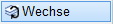
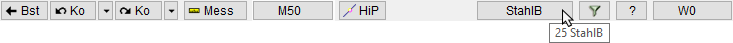

")
")
Wechseln in eine beliebige, eingeschaltete Folie oder Erzeugen einer neuen Folie. Die gewählte Folie wird als aktuelle Folie gesetzt (Folienautomatik wird ausgeschaltet).
Wenn Teilzeichnungen, die hinzugefügt werden, zusätzliche Folien enthalten, werden diese Folien auch eingefügt. Ist dabei die Foliennummer schon vorhanden, werden die hinzukommenden Elemente in die vorhandene Folie integriert.
|
Tipp: |
|
Versuchen Sie immer mit der Folienautomatik [AutFol] zu arbeiten. Wollen Sie z. B. die obere und untere Mattenverlegung in verschiedenen Folien ablegen, gehen Sie folgendermaßen vor: Nachdem Sie Matten (diese werden automatisch in Folie 3 abgelegt) verlegt haben, erzeugen Sie im Folienmanager eine neue Folie z. B. Nr. "30" mit dem Foliennamen "unMat" und wechseln wieder in die automatische Folienbelegung [AutFol], damit alle folgenden Elemente wider in der richtigen Folie abgelegt werden. Transformieren Sie dann mit der Funktion [Tr.Nr] den kompletten Folieninhalt der Folie 3 in die neue Folie "30". Beim Verlegen der oberen Bewehrung werden jetzt Matten wieder in Folie 3 abgelegt. |

Um in eine vorhandene Folie zu wechseln
§Geben Sie unter In welche Folie Nr. wechseln eine Foliennummer ein (z. B. 3 für Matten), und bestätigen Sie mit der Eingabetaste.
Die gewählte Folie wird als aktuelle Folie gesetzt (Folienautomatik wird ausgeschaltet).
|

ISBCAD wechselt zur Option [Folien | An/Aus]; Sie können eine Folie ein- oder ausblenden.
Um eine neue Folie zu erstellen und in diese zu wechseln
§Geben Sie unter In welche Folie Nr. wechseln eine noch nicht verwendete Foliennummer (z. B. 25) ein und bestätigen Sie mit der Eingabetaste.
§Geben Sie unter Folienname eine Bezeichnung für die Folie ein (z. B. StahlB) und bestätigen Sie mit der Eingabetaste.
Die neue Folie wird erstellt und als aktuelle Folie gesetzt. (Folienautomatik wird ausgeschaltet).
 |
ISBCAD wechselt zur Option [Folien | An/Aus]; Sie können eine Folie ein- oder ausblenden.
Zugehörige Referenzen: